Lear, Lover, or Lunatic:
Mapping Shakespeare for the Streaming Library
인물 관계망과 정서 곡선 데이터 융합 분석을 통한 시청자 중심의 하이브리드 추천 큐레이션
1. Introduction (서론)
본 프로젝트는 글로벌 스트리밍 서비스(OTT)의 방대한 라이브러리를 시청자 중심의 혁신적인 방식으로 큐레이션하기 위해 기획되었다. 기존의 단순한 장르 분류(액션, 로맨스 등)를 넘어, 인류 보편의 감정과 인간관계의 원형을 품고 있는 '셰익스피어 희곡 37편'을 기하학적 기준점으로 삼아 새로운 추천 시스템을 구축하고자 한다. 시청자가 스토리와 가장 깊게 교감하는 두 가지 핵심 요소인 '동적 감정 흐름과 정적 인물 관계망'을 인공지능 알고리즘으로 계량화하여, 전 세계 영화와 시리즈에 보편적으로 적용할 수 있는 4대 메타 장르 카테고리를 도출하였다.
2. Methodology (연구 방법론)
■ 디지털 인문학 툴의 한계와 코랩(Colab) 전환 배경
우리 팀은 초기 디지털 인문학 툴인 DraCor, Voyant Tools, Gephi를 활용해 데이터 패턴을 정성적으로 포착하려 했다. Voyant Tools 분석을 위해 제미나이(Gemini)와 협력하여 긍정/부정어 및 불용어 리스트를 고도화했으나, 텍스트 마이닝의 특성상 시간의 흐름에 따른 감정의 '동적 서사 궤적'(비극의 대폭락이나 희극의 대화합)을 반영하지 못하고 평면화되는 한계를 겪었다. 또한 Gephi의 시각화 레이아웃은 미세한 설정 변경에 따라 관계망 구도가 완전히 뒤바뀌어, 글로벌 플랫폼의 추천 코어에 필수적인 '객관성'을 확보하기 어려웠다. 무가공 데이터를 LLM에 직접 입력하는 방식 역시 알고리즘의 불투명성으로 인해 팀원들의 합의를 이끌어내지 못했다.
이러한 한계를 극복하고 시청자가 스토리와 교감하는 본질적인 규칙을 찾기 위해, 우리 팀은 구글 코랩(Google Colab) 환경에서 shakespeare-sentiment explorer와 shakespeare-network explorer의 자료를 기반으로 인물 관계도의 시각적 구도 분석과 희곡 대사의 텍스트 감성 분석을 결합하여 [인물 관계 분석]과 [이야기 흐름 분석]을 독립적으로 수행한 후, 이를 하나로 융합하는 3단계 정량 데이터 파이프라인을 구축했다.
■ 1단계: 정적 인물 관계 분석
먼저 극 중 인물들이 맺고 있는 사회적 역학 관계와 갈등의 구조를 객관적으로 측정하기 위해, 희곡의 인물 관계도 이미지에서 시각적 데이터 특징을 추출했다.
- 진영 대립도 (가중치: 2.5): 인물 노드들의 HSV 색상 모델 대비 및 격자별 픽셀 밀도 연산을 통해 세력 간 팽팽한 이분법적 파벌 갈등의 강도를 측정했다.
- 공간 분산도 (가중치: 1.2): 노드 좌푯값의 표준편차 분석을 통해 군대와 국가가 움직이는 대하 사극의 광활한 스케일과 왕궁 밀실극의 폐쇄성을 판별했다.
- 주인공 중심성 (가중치: 0.8): 중앙 영역의 연결선 픽셀 밀도를 측정하여 극 전체가 원탑 주인공 한 명에게 종속되어 있는지, 아니면 다자간 군상극 구조인지를 분리했다.
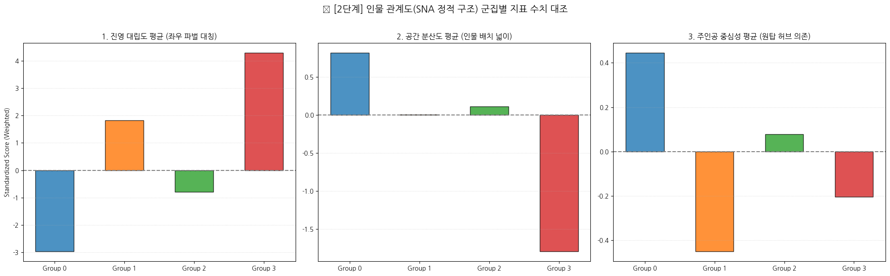

■ 2단계: 동적 이야기 흐름 분석
인물 구조가 주는 정적인 긴장감에 더해, 시간이 흐름에 따라 관객이 느끼는 정서적 변화와 플롯의 역동성을 측정하고자 희곡의 타임라인별 감성 분석을 진행했다.
- 감정 변동성 (가중치: 1.5): 소설이나 연극의 사건 전개에 따른 감정 수치의 표준편차를 구하여, 인물들이 겪는 정서적 휘발성과 격정적 소동극의 유무를 연산했다.
- 서사 궤적 기울기 (가중치: 2.5): 단어 기반의 감정 스캔 방식(VADER)을 고도화하여 극 초반 도입부와 최후반 종결부의 정서 차이값을 계산하여, 전통적인 운명의 추락(비극)과 구원의 상승(희극)의 방향타를 고정했다.
- 전반적 정서 톤 (가중치: 1.5): 전체 타임라인의 평균 무드를 추출하여 작품 전체를 지배하는 냉소적이거나 밝은 대사 기조와 고유의 분위기를 판별했다.


■ 3단계: 최종 데이터 융합 및 몰림 현상 방어 전략
마지막 단계로 독립적인 두 분석 결과(인물 구조와 감정 흐름)를 하나의 공간에 결합하는 융합 분석을 단행했다. 컴퓨터 알고리즘은 인간 평론가와 달리 문학적 의미를 모른 채 오직 입력된 숫자의 크기만을 비교하므로, 수만 단위의 주인공 중심성과 소수점 단위의 진영 대립도를 그대로 섞으면 숫자가 큰 지표가 작은 지표를 집어삼키는 심각한 불균형이 발생했다. 이 경우 대다수 작품이 한곳에 뭉쳐버리는 '단일 군집 편향(군집 붕괴) 오류'가 발생할 위험이 높았다. 우리 팀은 알고리즘이 두 데이터의 시너지를 온전히 반영하면서도 객관적인 장르 분리를 해낼 수 있도록 두 가지 방어막을 적용했다.
- 지표별 체급 평등화: 먼저 전처리(StandardScaler)를 통해 6대 지표의 수치 단위를 평균 0, 분산 1의 표준 점수로 변환했다. 이로써 수만 단위의 구조 데이터와 소수점 단위의 정서 데이터가 동등한 권한을 갖고 군집화 연산에 참여하게 되었다.
- 문학적 핵심 축의 가중치 튜닝: 체급을 맞춘 후, 셰익스피어 장르를 가르는 가장 결정적인 변별력인 [진영 대립도]와 [서사 궤적 기울기]에 각각 2.5배의 가중치를 곱했다.
■ 융합 분석의 최종 효과
이러한 데이터 융합 및 방어 전략을 통해 데이터들은 서로를 밀어내는 강력한 척력을 얻게 되었다. 인물 관계도와 이야기 흐름이라는 두 개의 렌즈가 결합하자, 결말만 해피엔딩이어서 희극으로 묶이던 <베니스의 상인>이 강렬한 파벌 갈등 구조를 인정받아 [The Merchant of Venice type]으로 이동하는 등 정교한 장르 재배치가 일어났다. 최종적으로 37편의 희곡은 쏠림 현상 없이 글로벌 스트리밍 서비스에 즉시 이식 가능한 As You Like It type, The Merchant of Venice type, Antony and Cleopatra type, Henry VI Part 2 type으로 완벽하게 분리되었다.
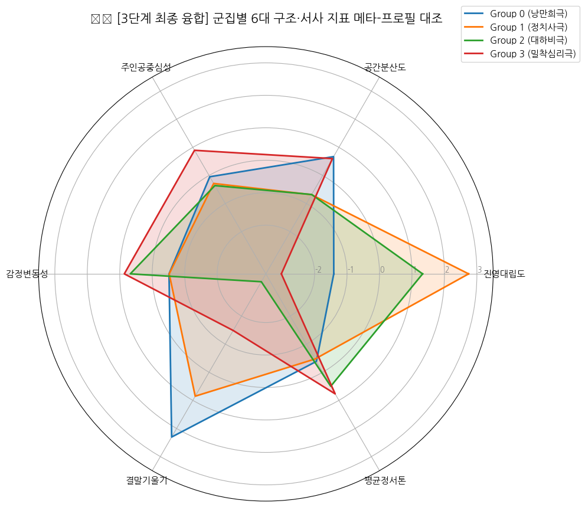
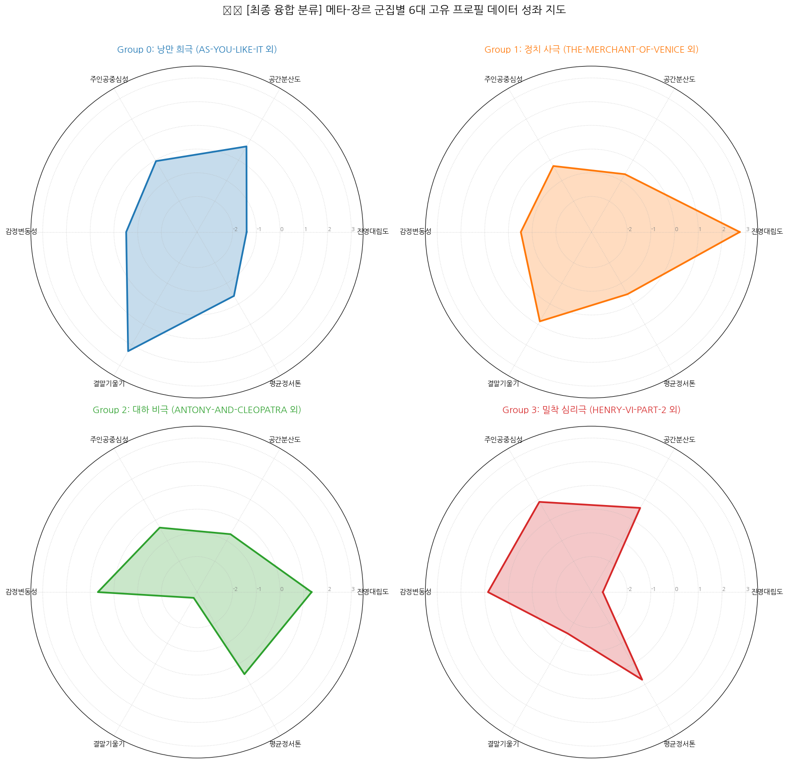
3. The Types (타입별 상세 프로필)
융합 분석 결과 도출된 4가지 하이브리드 메타 장르 타입의 데이터 속성과 큐레이션 가이드라인입니다. 탭을 클릭하여 각 타입의 상세 분석을 확인하세요.
[Emotional Flow (감정 흐름)]
본 타입의 감정 흐름은 극 후반부로 갈수록 정서적 만족도가 급격하게 상승하는 '구원과 대화합의 우상향 곡선'을 그린다. 이야기 중반부에는 인물들의 방랑이나 사소한 오해로 인해 감정선이 잠시 출렁이지만, 최종장에 이르러 모든 갈등이 한 번에 해소되며 축제와 결혼이라는 완벽한 해피엔딩으로 치닫는다. 실제 표준화 데이터 분석에서도 이를 증명하듯, 극 초반 대비 종결부의 정서적 상승도를 뜻하는 서사 궤적 기울기 지표가 +1.07 스코어로 강한 우상향 성향을 기록했다.
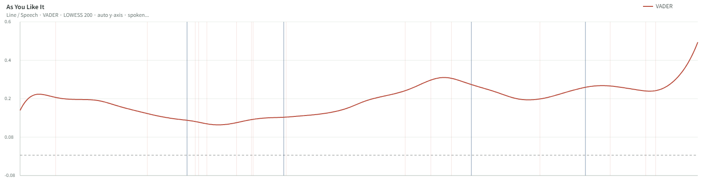
[Character Network (인물 관계망)]
인물 관계망 측면에서는 파벌 간의 적대 관계나 피비린내 나는 복수극이 철저히 배제된 '장벽 없는 개방형 구조'를 보여준다. 등장인물들이 출신이나 계급에 구애받지 않고 자유롭게 소통하며 화합을 이룬다. 실제로 계급이나 파벌 간의 대립 강도를 뜻하는 진영 대립도 지표가 전체 평균 이하인 -0.13 표준 점수로 매우 낮고 안정적으로 통제되어 있음을 시각적 네트워크 구조와 데이터로 확인할 수 있다.
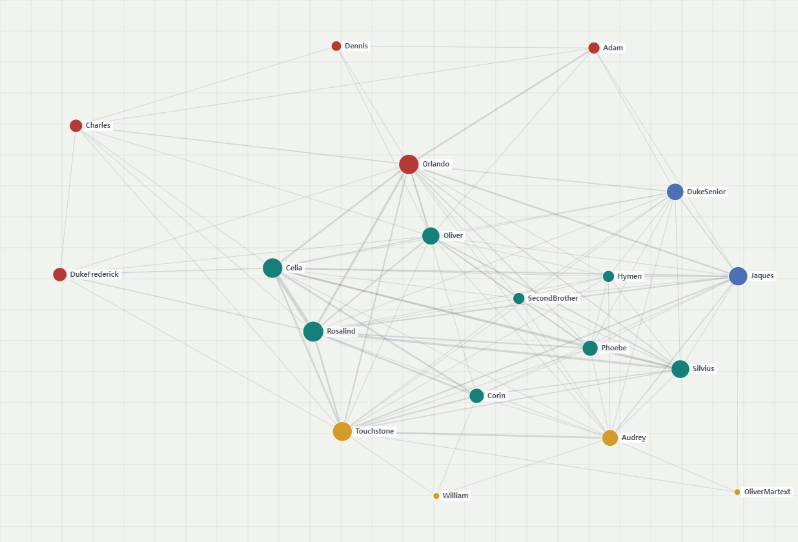
[Other Distinguishing Features (기타 특징)]
셰익스피어 말기 작품인 <심벨린>, <겨울이야기>, <페리클레스>는 내용이 워낙 복잡하고 어두운 부분이 많아 이야기의 흐름과 인물 관계도를 분리하여 단독 분석했을 시에는 다른 종류의 비극 카테고리로 분류되는 오류가 있었다. 그러나 최종 융합 과정에서 이 극들이 가진 '결국에는 용서와 화해로 상승하는 플롯 톤'과 '정돈된 인물 배치 구조'가 융합 시너지를 냈다. 그 결과 이 로맨스 3부작이 희극적 구원의 본질을 인정받아 본 As You Like It type 대륙으로 무사히 생환 및 분류되었다.
[Works in This Type (소속 작품)]
AS-YOU-LIKE-IT, TWELFTH-NIGHT, MIDSUMMER-NIGHTS-DREAM, MUCH-ADO-ABOUT-NOTHING, LOVE-LABOURS-LOST, COMEDY-OF-ERRORS, TAMING-OF-THE-SHREW, TWO-GENTLEMEN-OF-VERONA, MERRY-WIVES-OF-WINDSOR, CYMBELINE, WINTERS-TALE, PERICLES
[Target Viewers and Viewing Situations]
- 어필하는 시청자: 하루 끝에 감정적으로 따뜻하게 마무리하고 싶은 사람 / 로맨스·우정·화합 서사를 좋아하는 시청자 (특히 20~30대 여성) / 복잡한 갈등이나 비극 없이 캐릭터들의 관계가 성장하는 것을 즐기는 사람 / 가족이나 연인과 함께 보는 시청자
- 어울리는 시청 상황: 주말 저녁 소파에서 편하게 볼 때 / 지치거나 스트레스받은 날 기분 전환용 / 연인·친구와 함께하는 무드 있는 영화의 밤 / 어린이·청소년도 함께하는 가족 시청
[Emotional Flow (감정 흐름)]
본 타입의 감정 흐름은 신파적인 감정 과잉이나 극단적인 정서적 롤러코스터를 철저히 통제하는 '냉철하고 건조한 평행선'을 유지한다. 인물들이 눈물이나 분노에 휩쓸리기보다는 계약 조건과 법리적 공방을 중심으로 대사를 주고받기 때문이다. 실제 감성 분석 결과에서도 정서적 굴곡을 뜻하는 감정 변동성(-0.23 스코어)과 서사 궤적 기울기(+0.06 스코어) 지표가 모두 중심값인 0 내외에 묵직하게 수렴하며, 극의 시작부터 끝까지 정서적 동요 없이 차갑고 팽팽한 텐션이 유지됨을 증명했다.
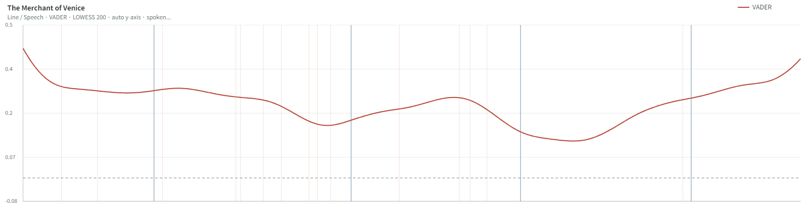
[Character Network (인물 관계망)]
인물 관계망은 기독교 진영(안토니오와 친구들)과 유대인 진영(샤일록)이 칼날처럼 마주 보고 서 있는 '데칼코마니형 이분법 구조'를 띤다. 뚜렷하게 갈린 두 집단이 법정과 계약이라는 정교한 틀 안에서 서로를 압박하며 팽팽한 균형을 이룬다. 이러한 구조적 정체성은 두 세력 간의 갈등 강도를 뜻하는 진영 대립도 지표가 +1.45 스코어라는 압도적인 최상위권 수치를 기록한 것에서 시각적으로 명확히 드러낸다.
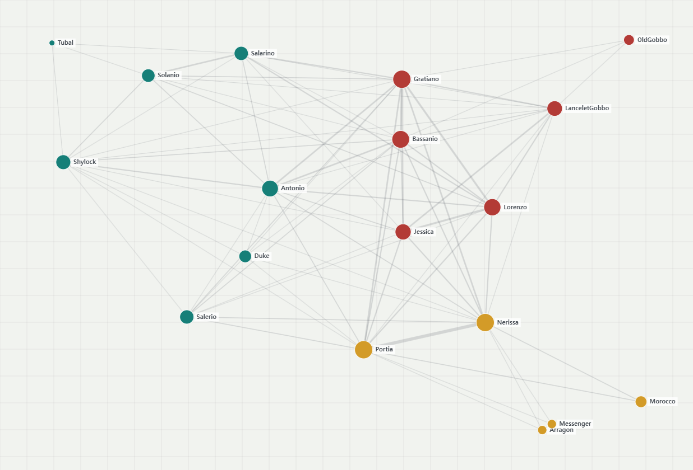
[Other Distinguishing Features (기타 특징)]
이야기 흐름(VADER)만 독립적으로 분석했을 때는 샤일록이 법적으로 몰락하고 재판이 해피엔딩으로 끝나기 때문에 <베니스의 상인>이 <한여름 밤의 꿈> 같은 순수 낭만 희극(As You Like It type)들과 같이 묶여 있었다. 하지만 이 극은 인물 관계도상에서 기독교 진영 vs 유대인 진영이 숨 막히게 대립하는 강렬한 구조적 대치 텐션을 품고 있다. 최종분석 알고리즘은 결말의 분위기만 기쁘다고 낭만극으로 타협하지 않고, 정교한 법정 공방과 갈등이 지배하는 문제극적 본질을 인지하여 [The Merchant of Venice type]으로 확고하게 분리 및 이동시켰다.
[Works in This Type (소속 작품)]
THE-MERCHANT-OF-VENICE, MEASURE-FOR-MEASURE, ALLS-WELL-THAT-ENDS-WELL, TROILUS-AND-CRESSIDA, TIMON-OF-ATHENS, HENRY-V, RICHARD-II, KING-JOHN, HENRY-VIII, TEMPEST
[Target Viewers and Viewing Situations]
- 어필하는 시청자: 감정적 신파보다 지적·도덕적 긴장감을 즐기는 시청자 / 법정 드라마, 정치 스릴러, 사회 비판물을 선호하는 사람 / 선악이 명확하지 않은 복잡한 윤리 문제를 깊이 생각해보고 싶은 시청자 / 30~50대 직장인, 독서·토론을 즐기는 지식 탐구형 시청자
- 어울리는 시청 상황: 보고 나서 바로 끄는 작품이 아니라 끝난 뒤에도 한동안 생각이 남는 작품을 보고 싶을 때 / 누가 맞고 틀린지 쉽게 판단되지 않는 이야기를 좋아할 때 / 거래, 복수, 도덕적 선택처럼 말싸움과 긴장감이 중요한 작품을 보고 싶을 때 / 가볍게 웃고 넘기는 콘텐츠보다 머리를 쓰면서 몰입하고 싶을 때
[Emotional Flow (감정 흐름)]
본 타입의 감정 흐름은 거대한 역사적 소용돌이와 전쟁의 승패에 따라 정서가 요동치다가 결국 파멸로 내리꽂히는 '격정적인 자유낙하 곡선'을 그린다. 인물들의 감정 기복이 심해 표준점수 기준 감정 변동성(+0.21 스코어)이 양수로 춤추며, 최후반 종결부에는 주인공들의 동반 자살과 국가의 몰락이 겹치면서 서사 궤적 기울기가 -1.38 스코어라는 극단적인 대폭락 음수(-)를 기록하는 정서적 궤적을 입증했다.
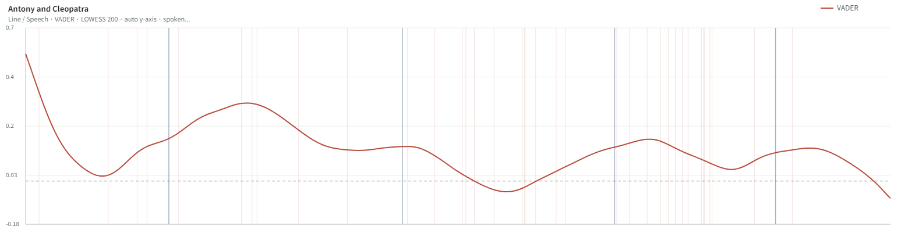
[Character Network (인물 관계망)]
인물 관계망은 로마와 이집트라는 광활한 지리적 배경 위에 수많은 군상들이 흩어져 있는 '대하 장막형 와이드 구조'를 보여준다. 소수의 밀실 정치가 아니라 국가와 군대가 움직이는 거대한 스케일이기에, 인물 노드들이 사방으로 넓고 비대칭적으로 분포한다. 실제 관계망 시각화에서도 인물 좌푯값의 넓이를 뜻하는 공간 분산도 지표와 파벌 간 세력을 뜻하는 진영 대립도(+0.76 스코어) 지표가 매우 균형 있게 확장되어 광활한 세계관의 스케일을 데이터로 드러낸다.
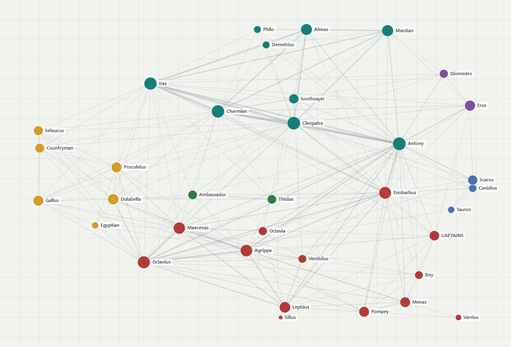
[Other Distinguishing Features (기타 특징)]
인물 관계도(SNA)만 단독으로 봤을 때 <로미오와 줄리엣>은 등장인물 수가 적고 두 가문(몬태규/캡슐렛)의 갈등 구조가 구도상 단출하여 소규모 갈등극 카테고리에 머물러 있었다. 그러나 동적 서사의 핵심 지표인 '서사 궤적 기울기' 가중치가 결합하자, 두 연인의 자비 없는 파멸적 대폭락 서사 스코어가 효과적으로 개입했다. 그 결과, 소동극의 껍질을 완전히 깨고 안토니우스나 시저 등 국가 스케일의 운명적 몰락을 다룬 대하 에픽 구조인 [Antony and Cleopatra type]으로 최종 상향 분류 및 격상되었다.
[Works in This Type (소속 작품)]
ANTONY-AND-CLEOPATRA, CORIOLANUS, JULIUS-CAESAR, ROMEO-AND-JULIET, HENRY-IV-PART-1, HENRY-IV-PART-2, KING-LEAR, TITUS-ANDRONICUS
[Target Viewers and Viewing Situations]
- 어필하는 시청자: 스펙터클한 스케일과 웅장한 서사에 몰입하는 시청자 / 역사물·전쟁물·대하드라마 팬 (로마, 삼국지, 왕좌의 게임류) / 비극적 결말이라도 감정을 크게 쏟아내는 카타르시스를 원하는 사람 / 운명적 사랑이나 영웅의 몰락 서사에 감동받는 시청자
- 어울리는 시청 상황: 주말 오후 혹은 저녁, 충분한 몰입 시간이 확보된 상황 / 대형 TV·영화관처럼 화면 스케일을 살릴 수 있는 환경 / 감정을 크게 쏟고 싶은 날 (카타르시스 목적) / 역사·문화에 관심 있는 친구와 함께 볼 때 / 사랑, 권력, 전쟁이 한꺼번에 몰아치는 대형 서사를 보고 싶을 때
[Emotional Flow (감정 흐름)]
본 타입의 감정 흐름은 외부의 환경 변화보다는 인물 내부의 의심, 독백, 광기가 소용돌이치는 '심리적 블랙홀 곡선'을 그린다. 주인공의 내면적 타락과 정신적 붕괴가 점진적으로 심화되며 주변 인물들의 감정까지 어둠으로 전염시킨다. 플롯이 전개될수록 주인공의 심리적 파멸 궤적이 깊어지면서, 최종 구원 없이 서사 궤적 기울기가 -0.65 표준 스코어의 깊은 하강 침하 곡선을 그리는 서사적 정체성을 구축했다.
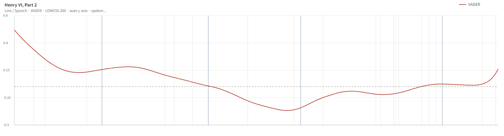
[Character Network (인물 관계망)]
인물 관계망은 광활한 전장 대신 왕궁 밀실이나 좁은 인간관계로 무대를 압축한 '원탑 주인공 중심의 독점적 허브 구조'를 띤다. 주변 인물들의 독자적인 관계망은 힘을 잃고 지워지며, 오직 압도적인 중심 허브 한 명에게 모든 인물 관계선이 블랙홀처럼 종속되어 심리적 압박을 발생시킨다. 이는 네트워크 중앙 영역의 링크 밀집성을 뜻하는 주인공 중심성 지표가 +2.02 스코어라는 압도적인 최고점을 찍은 데이터로 명백히 입증된다.
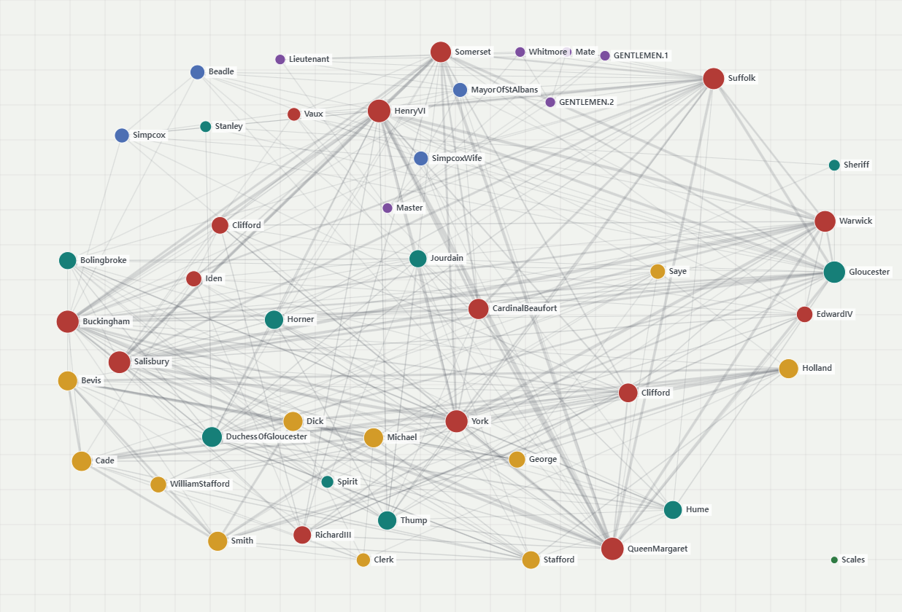
[Other Distinguishing Features (기타 특징)]
전통적인 문학 분류에서는 <햄릿>, <맥베스>, <리어왕>, <오셀로>를 '4대 비극'이라는 하나의 거대한 명사로 묶어 다루어 왔다. 그러나 본 6차원 가중치 융합 분석 결과 4대 비극의 본질적 내부 분리가 일어났다. 왕국 전체가 전장으로 변하며 인물 노드들이 광활하게 분산되는 스케일의 <리어왕>은 Antony and Cleopatra type에 잔류했다. 반면, 주인공 한 명의 내면적 광기와 독백, 밀실에서의 심리적 가스라이팅 강도가 압도적인 <햄릿>, <맥베스>, <오셀로>는 강력한 중심성 가중치 반응을 일으키며 궁중 암투극인 <리처드 3세>, <헨리 6세 파트 2>와 손을 잡고 [Henry VI Part 2 type]이라는 정교한 밀실 심리 잔혹극 대륙을 새롭게 개척했다.
[Works in This Type (소속 작품)]
HENRY-VI-PART-2, HENRY-VI-PART-1, HENRY-VI-PART-3, RICHARD-III, HAMLET, MACBETH, OTHELLO
[Target Viewers and Viewing Situations]
- 어필하는 시청자: 공포·스릴러를 좋아하지만 과도한 폭력보다 심리적 공포를 선호하는 시청자 / 왕권 다툼, 정치적 배신, 권력 암투를 좋아하는 시청자 / 역사극, 정치 드라마, 궁중 권력극을 선호하는 사람 / 한 인물보다 여러 세력의 충돌과 균열을 따라가는 군상극을 좋아하는 시청자
- 어울리는 시청 상황: 심리 스릴러나 두뇌 싸움이 치열한 범죄극을 보고 싶을 때 / 혼자 방에서 불을 끄고 극도의 몰입감과 긴장감을 느끼고 싶을 때 / 인물의 깊은 내면 묘사와 연기력이 폭발하는 작품이 당길 때
4. Reflection and Conclusion (성찰 및 결론)
■ 본 분류 체계가 계량화한 셰익스피어 희곡의 문학적 특성
본 연구의 융합 분류 알고리즘은 수백 년간 이어져 온 정성적인 문학 장르관을 데이터 과학의 영역으로 끌어내어 객관적으로 증명했다. 분석 결과, 셰익스피어 희곡의 정체성은 단순히 대사의 표면적 밝기나 등장인물의 숫자로 결정되는 것이 아님을 확인했다. 전통적인 장르론에서 하나로 묶이던 '4대 비극'이 단일 인물의 심리적 붕괴 수준과 공간적 스케일에 따라 군집 내 분열을 일으킨 현상이 이를 뒷받침한다. 즉, 셰익스피어의 작품들은 '파벌 갈등의 기하학적 대칭 구도'와 '서사 결말부의 정서적 낙폭'이라는 보이지 않는 두 축의 역학 관계 위에서 새로운 차원의 통합 장르 카테고리를 구축하고 있음을 한눈에 보는 데이터 분포 지도로 입증해냈다.
■ 시청자와 콘텐츠의 새로운 연결 방식 (큐레이션의 패러다임 전환)
기존 스트리밍 플랫폼의 추천 시스템은 '액션', '로맨스', '사극' 등 외형적 카테고리에만 의존하여 정작 시청자가 작품을 보며 느끼는 심리적 분위기를 반영하지 못했다. 그러나 본 연구가 제안하는 '셰익스피어 매핑 모델'은 시청자가 스토리에 몰입하는 본질인 '인물 관계의 긴장감'과 '정서적 카타르시스의 경로'를 직관적으로 관통한다. 시청자들은 자신의 실시간 무드나 시청 맥락에 따라, 감정의 구원을 원할 때는 As You Like It type을, 고도의 지적 결투를 원할 때는 The Merchant of Venice type을 선택하여 콘텐츠와 가장 심층적인 심리적 교감을 이룰 수patch했다.
■ 분석 방법론의 한계점 및 구체적인 보완 방안
본 연구는 인문학과 데이터 과학을 융합한 혁신적인 시도였으나, 다음과 같은 기술적·이론적 한계점을 내포하고 있으며 이에 대한 보완책을 제안한다.
- 임의적 가중치 할당의 한계와 보완: 6대 지표의 군집화 과정에서 장르를 가르는 핵심 축(진영 대립도, 서사 기울기)에 부여한 가중치 수치(2.5)는 정교한 통계적 실험이나 사전 연구에 기반한 것이 아니라, 문학적 도메인 지식에 의존하여 임의로 설정한 측면에 가깝다. 향후 실제 스트리밍 서비스 유저들의 '콘텐츠 시청 후 장르 만족도' 및 '클릭 로그 데이터'를 기준점으로 삼아, 인공지능이 역으로 최적의 장르 분류 가중치 값을 스스로 학습하고 최적화하는 '지도학습 기반 가중치 튜닝 알고리즘'을 도입하여 보완해야 한다.
- 화면 중심 기반 스캔의 한계와 보완: 정적 인물 관계망 분석 시, 극의 핵심을 쥐고 있는 인물을 추적하여 중심성을 계산한 것이 아니라 관계도 이미지의 기하학적 '화면 중앙 영역'에 걸리는 픽셀 밀도로 주인공 중심성을 대체 계산했기 때문에, 실제 극의 중심인물과 이미지상의 중앙 좌표 간에 일부 오차가 발생할 수 있다. 이미지 기반 스캔을 넘어 희곡 텍스트 원본에서 인물 명사를 추출하고, 대사 수와 등장을 기준으로 인물 간 링크를 직접 연결하는 '텍스트 기반 사회관계망 분석 모델'을 병렬 결합하여 물리적 화면 배치 오류를 원천 차단해야 한다.
- 감정 곡선의 선형적 단순화 한계와 보완: 대사 속 감정선 추적 방식 기반의 감성 분석이 일부 작품의 오타나 문장 부호의 영향으로 인해 초기 0.0점으로 수렴하거나, 대사 속 이면의 반어법, 풍자, 은유와 같은 고도의 문학적 뉘앙스를 포착하지 못하고 단순 긍정/부정 수치로 단순화한 한계가 존재한다. 단순 사전 기반 감성 분석 체계를 고도화하여, 문맥과 문학적 비유를 더 깊이 이해할 수 있는 문맥 인식 기반의 인공지능 분석 알고리즘을 동적 서사 지표에 도입함으로써 대사 속에 숨겨진 냉소적 서브텍스트까지 정밀하게 수치화해야 한다.
■ 광범위한 스트리밍 라이브러리로의 확장 및 적용 방안
본 프로젝트에서 정립한 4대 장르 모델은 현대 스트리밍 플랫폼 내 수만 편의 라이브러리에 즉시 이식 가능하다. 영화 및 드라마의 영상 데이터에서 딥러닝 기반 이미지 인식 기술로 인물의 얼굴 등장 빈도와 구도를 계산하여 인물 관계도를 도출하고,자막 파일을 감성 분석 엔진에 통과시켜 이야기 흐름 곡선을 실시간으로 스캔하는 자동화 시스템을 구축할 수 있다. 이를 통해 플랫폼은 인간 평론가의 태깅 속도 한계를 극복하고 신작 콘텐츠에 Psychological Vortex(심리적 소용돌이)나 Epic Free-Fall(서사의 파멸적 하강)과 같은 직관적인 하이브리드 감성 태그를 부여함으로써, 전 세계 시청자들에게 정서 중심의 개인화된 콘텐츠 추천 경험을 제공할 수 있을 것이다.
📂 연구 데이터 및 소스코드 아카이브
개인정보 및 구글 드라이브 보안을 위해 본 깃허브 저장소(Repository) 공간 내에 안전하게 관리되고 있는 마스터 데이터 백업본입니다.
5. References
- Google Gemini.
- GoogLE Colab
- https://coolmintmild.github.io/shakespeare-sentiment/.
- https://coolmintmild.github.io/shakespeare-network/.